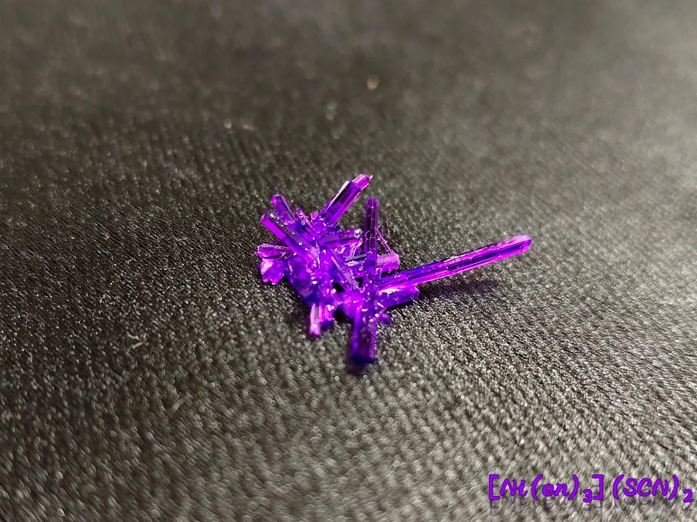

硫氰酸三乙二胺合镍篇

图源：迷路的野指针

图源：不明就里的乙酸铜
🎯 预览
- 难度等级：★★★☆☆ (中高级)
- 实验耗时：约2小时（不含干燥）
- 单晶培养：数天至数周
- 推荐人群：有一定配位化学基础
- 六水合硫酸镍 NiSO4·6H2O
- 硫氰酸钾 KSCN（或硫氰酸铵 NH4SCN）
- 无水乙二胺 en
- 无水乙醇 EtOH
- 蒸馏水、过滤与干燥器材
一、背景化学知识
1.1 化合物简介
硫氰酸三乙二胺合镍是一种经典的镍(II)螯合配合物，以艳丽的紫色针状晶体著称。乙二胺（en）作为双齿螯合配体，三个分子各占据中心镍离子的两个配位点，形成六配位的八面体螯合物。该配合物是配位化学教学中展示螯合效应与光谱化学序列的优秀案例。
1.2 目标化合物属性
Tris(ethylenediamine)nickel(II) thiocyanate
1.3 结构特点
二、实验制备
2.1 原料准备与安全提示
硫氰酸钾 KSCN — 10.0 g（若用硫氰酸铵 NH4SCN 则需约 8.0 g）
无水乙二胺 en — 约 10 mL
无水乙醇 EtOH（沉淀副产物及洗涤用）
蒸馏水 — 约 65 mL
碎冰渣（用于冰水浴）
2.2 第一阶段：制备硫氰酸镍底液
NiSO4 + 2KSCN ──→ K2SO4↓ + Ni(SCN)2
（EtOH 介质中沉淀硫酸钾，滤液为硫氰酸镍溶液）
2.3 第二阶段：配位反应与结晶
深绿色（[Ni(H2O)6]2+）→ 深蓝色（中间过渡态）→ 艳紫色（[Ni(en)3]2+）
[Ni(H2O)6]2+ + 3en → [Ni(en)3]2+ + 6H2O
乙二胺作为强配体，在光谱化学序列中远高于水分子。随着配体取代的进行，晶体场分裂能 Δ 逐步增大，d-d 跃迁吸收波长蓝移，溶液颜色由低场配体（H2O）对应的深绿色逐步转变为高场配体（en）对应的艳紫色。
2.4 第三阶段：收集、干燥与称重
理论产量：约 17.7 g
最终产率：56.5%
2.5 大颗粒单晶培养
该配合物同样可以通过慢速蒸发或晶种悬挂法来培养更大颗粒的紫色单晶。由于产物在乙醇-水混合溶剂体系中的溶解度特性，控制蒸发速率是获得大单晶的关键。
- 用已制得的碎晶重新配制不饱和溶液，过滤后静置蒸发
- 使用晶种悬挂法使晶体各面均匀生长
- 控制温度稳定在20-25℃，避免震动
- 成品用透明指甲油涂抹表面或环氧树脂封装保存
详细操作参考晶体保存篇
三、安全与注意事项
3.1 危险性
- 镍毒性：六水合硫酸镍为重金属盐，属于IARC 1类致癌物。误食含镍化合物会引起恶心、呕吐，长期接触增加致癌风险
- 硫氰酸盐毒性：硫氰酸钾（铵）有一定毒性，对皮肤和黏膜有刺激性
- 乙二胺腐蚀性：无水乙二胺具有强烈刺激性气味，可腐蚀皮肤和黏膜，吸入蒸气会刺激呼吸道
- 眼部危害：乙二胺溅入眼睛可能导致严重损伤，需立即用大量清水冲洗并就医
- 乙醇易燃：无水乙醇易挥发且易燃，操作时必须远离一切火源
- 环境危害：镍离子和硫氰酸盐对水生生物有毒，废液不可直接倒入下水道
3.2 防护与应急
- 操作时务必佩戴丁腈手套、护目镜和防护面罩，穿实验服
- 涉及乙二胺的操作必须在通风良好的环境下进行，最好在通风橱中操作
- 冰水浴降温时注意烧杯温差应力，避免玻璃器皿炸裂
- 废液处理：加入过量碳酸钠使镍离子沉淀为碳酸镍，过滤后固体按重金属废物处理
- 急救：皮肤接触乙二胺立即用大量清水冲洗至少15分钟；误触眼睛立即用大量清水冲洗并就医
3.3 禁止事项
- 禁止在无防护条件下直接接触原料或溶液，尤其是乙二胺
- 禁止在密闭环境中操作无水乙二胺
- 禁止将含镍废液直接倒入下水道或自然环境
- 禁止在食物附近进行操作或存放化学品
- 禁止让未成年人独立操作
四、成果展示与质量评估
优质晶体特征
- 颜色均匀，呈浓郁的艳紫色
- 晶形为针状或细长棱柱状，晶面光滑
- 在灯光下闪闪发光，具有金属光泽
- 干燥后色泽保持稳定
- 颜色偏蓝或偏绿 - 乙二胺配位不充分
- 晶体过小呈粉末状 - 冷却速度过快或浓缩不足
- 颜色发暗或呈灰紫色 - 原料杂质或副产物残留
- 晶体潮解 - 干燥不彻底或存放环境湿度大
五、常见问题与解答（Q&A）
试剂替代与关键操作
Q1：六水合硫酸镍是否可以用六水合硫酸镍铵代替？
可以。因为硫酸铵在乙醇中的溶解度同样很差，能够一起沉淀除去。但使用时需要重新计算，确保镍离子和硫氰酸根的摩尔比严格在 1:2。
Q2：硫氰酸钾可以用硫氰酸钡代替吗？
可以，且反应更彻底。钡离子与硫酸根会结合生成极难溶的硫酸钡（BaSO4）沉淀，使副产物分离得更完美。但硫氰酸钡毒性极高，操作时需极度小心。
Q3：市售的水合乙二胺可以使用吗？
可以使用。只要严格按照镍离子与乙二胺 1:3 的摩尔比，折算并扣除掉水合乙二胺中的水分质量，计算出所需的实际用量即可。
Q4：乙二胺盐酸盐可以使用吗？
不行。使用盐酸盐会直接在体系中引入氯离子（Cl-），从而给最终的目标产物引入杂质，影响纯度。
六、科学原理
6.1 配位化学
6.2 颜色成因与光谱化学序列
6.3 结晶条件分析
6.4 光学异构：手性配位八面体
6.5 酸致配体解离：配位平衡的直观演示
紫色（[Ni(en)3]2+）→ 蓝色（[Ni(en)2(H2O)2]2+）→ 绿色（[Ni(en)(H2O)4]2+）→ 浅绿色（[Ni(H2O)6]2+）
颜色按光谱化学序列反向演化，恰好是合成过程的"倒带"播放。
[Ni(en)3]2+ + 2H+ + 2H2O ──→ [Ni(en)2(H2O)2]2+ + enH+
过量酸可完全将三个 en 全部质子化为 enH22+，再生 [Ni(H2O)6]2+
6.6 稳定常数：量化螯合效应
K1 = [Ni(en)]2+ / ([Ni2+][en]) ≈ 107.5
K2 = [Ni(en)2]2+ / ([Ni(en)]2+[en]) ≈ 106.1
K3 = [Ni(en)3]2+ / ([Ni(en)2]2+[en]) ≈ 104.6
作为对比：[Ni(NH3)6]2+ 的 log β6 ≈ 8.6
虽然两者都是氮配位，但螯合配合物的总稳定常数高出约 10 个数量级（~1010 倍）。这是螯合效应的量化体现——五个五元螯合环的形成释放巨大熵增（6 个自由粒子 → 9 个自由粒子），显著提升热力学稳定性。